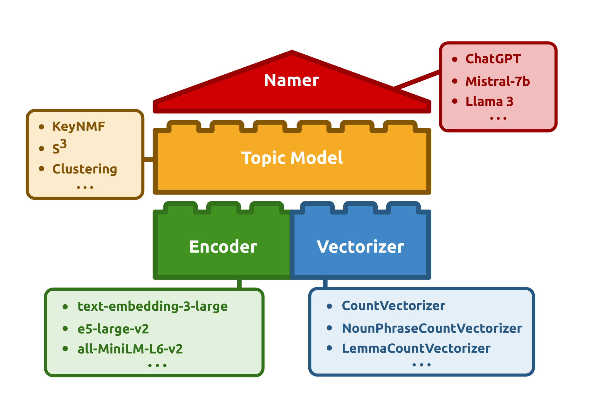

Defining and Training Topic Models
In order to start modeling your corpora, you will need to define a topic model. There are a wide array of available models in Turftopic that all have their unique behaviour. On the other hand all models will need to have certain components, and have attributes you can adjust to your needs. This page provides a guide on how to define models, train them, and use them for inference.

Defining a Model
1. Topic Model
In order to initialize a model, you will first need to make a choice about which topic model you'd like to use. You might want to have a look at the Models page in order to make an informed choice about the topic model you intend to train.
Here are some examples of models you can load and use in the package:
from turftopic import KeyNMF
model = KeyNMF(n_components=10, top_n=15)
from turftopic import ClusteringTopicModel
model = ClusteringTopicModel(n_reduce_to=10, feature_importance="centroid")
from turftopic import SemanticSignalSeparation
model = SemanticSignalSeparation(n_components=10, feature_importance="combined")
2. Vectorizer
In Turftopic, all Models have a vectorizer component, which is responsible for extracting word content from documents in the corpus. This means, that a vectorizer also determines which words will be part of the model's vocabulary. For a more detailed explanation, see the Vectorizers page
The default is scikit-learn's CountVectorizer:
from sklearn.feature_extraction.text import CountVectorizer
default_vectorizer = CountVectorizer(min_df=10, stop_words="english")
You can add a custom vectorizer to a topic model upon initializing it,
thereby getting different behaviours. You can for instance use noun-phrases in your model instead of words by using NounPhraseCountVectorizer or estimate parameters for lemmas by using LemmaCountVectorizer
pip install turftopic[spacy]
python -m spacy download "en_core_web_sm"
from turftopic import KeyNMF
from turftopic.vectorizers.spacy import NounPhraseCountVectorizer
model = KeyNMF(10, vectorizer=NounPhraseCountVectorizer("en_core_web_sm"))
model.fit(corpus)
model.print_topics()
| Topic ID | Highest Ranking |
|---|---|
| ... | |
| 3 | fanaticism, theism, fanatism, all fanatism, theists, strong theism, strong atheism, fanatics, precisely some theists, all theism |
| 4 | religion foundation darwin fish bumper stickers, darwin fish, atheism, 3d plastic fish, fish symbol, atheist books, atheist organizations, negative atheism, positive atheism, atheism index |
| ... |
pip install turftopic[spacy]
python -m spacy download "en_core_web_sm"
from turftopic import KeyNMF
from turftopic.vectorizers.spacy import LemmaCountVectorizer
model = KeyNMF(10, vectorizer=LemmaCountVectorizer("en_core_web_sm"))
model.fit(corpus)
model.print_topics()
| Topic ID | Highest Ranking |
|---|---|
| 0 | atheist, theist, belief, christians, agnostic, christian, mythology, asimov, abortion, read |
| 1 | morality, moral, immoral, objective, society, animal, natural, societal, murder, morally |
| ... |
from turftopic import KeyNMF
from turftopic.vectorizers.spacy import TokenCountVectorizer
# CountVectorizer for Arabic
vectorizer = TokenCountVectorizer("ar", min_df=10)
model = KeyNMF(
n_components=10,
vectorizer=vectorizer,
encoder="Omartificial-Intelligence-Space/Arabic-MiniLM-L12-v2-all-nli-triplet"
)
model.fit(corpus)
3. Encoder
Since all models in Turftopic rely on contextual embeddings, you will need to specify a contextual embedding model to use.
The default is all-MiniLM-L6-v2, which is a very fast and reasonably performant embedding model for English.
You might, however want to use custom embeddings, either because your corpus is not in English, or because you need higher speed or performance.
See a detailed guide on Encoders here.
Similar to a vectorizer, you can add an encoder to a topic model upon initializing it.
from turftopic import KeyNMF
from sentence_transformers import SentenceTransformer
encoder = SentenceTransformer("parahprase-multilingual-MiniLM-L12-v2")
model = KeyNMF(10, encoder=encoder)
4. Namer (optional)
A Namer is an optional part of your topic modeling pipeline, that can automatically assign human-readable names to topics. Namers are technically not part of your topic model, and should be used after training. See a detailed guide here.
from turftopic import KeyNMF
from turftopic.namers import LLMTopicNamer
model = KeyNMF(10).fit(corpus)
namer = LLMTopicNamer("HuggingFaceTB/SmolLM2-1.7B-Instruct")
model.rename_topics(namer)
pip install openai
export OPENAI_API_KEY="sk-<your key goes here>"
from turftopic.namers import OpenAITopicNamer
namer = OpenAITopicNamer("gpt-4o-mini")
model.rename_topics(namer)
model.print_topics()
| Topic ID | Topic Name | Highest Ranking |
|---|---|---|
| 0 | Operating Systems and Software | windows, dos, os, ms, microsoft, unix, nt, memory, program, apps |
| 1 | Atheism and Belief Systems | atheism, atheist, atheists, belief, religion, religious, theists, beliefs, believe, faith |
| ... |
Training and Inference
Model Training
All models in Turftopic follow a scikit-learn API for fitting topic models.
Every model in the library can be trained by passing a set of documents (a corpus) to the model.
This has to be an Iterable type object, that has to be reusable as models will typically do multiple passes on the corpus.
corpus: list[str] = ["this is a a document", "this is yet another document", ...]
Fit your topic model
fit() simply fits the topic model and returns the same model object fitted.
You can optionally pass a set of precomputed embeddings for the documents.
model.fit(corpus)
# or
model.fit(corpus, embeddings=embeddings)
fit_transform() not only trains the model but also returns topic-proportions in all documents in the corpus.
document_topic_matrix = model.fit_transform(corpus)
# or
document_topic_matrix = model.fit_transform(corpus, embeddings=embeddings)
print(document_topic_matrix.shape)
# prints (n_documents, n_topics)
prepare_topic_data() not only fits the model (only if not already fitted), but also saves other aspects of topic inference, which makes it easier to then use this object for pretty printing and visualizing your models (see Model Interpretation)
topic_data = model.prepare_topic_data(corpus)
# print to see what attributes you can access.
print(topic_data)
TopicData
├── corpus (1000)
├── vocab (1746,)
├── document_term_matrix (1000, 1746)
├── topic_term_matrix (10, 1746)
├── document_topic_matrix (1000, 10)
├── document_representation (1000, 384)
├── transform
├── topic_names (10)
├── has_negative_side
└── hierarchy
Precomputing Embeddings
In order to cut down on costs/computational load when fitting multiple models in a row, you might want to encode the documents before fitting a model. Encoding the corpus is the heaviest part of the process and you can spare yourself a lot of time by only doing it once. Some models have to encode the vocabulary as well, this cannot be done before inference, as the models learn the vocabulary itself from the corpus.
The fit() method of all models takes and embeddings argument, that allows you to pass a precooked embedding matrix along to fitting.
One thing to watch out for is that you have to pass the embedding model along to the model that was used for encoding the corpus.
This is again, to ensure that the vocabulary gets encoded with the same embedding model as the documents.
Here's a snippet of correct usage:
import numpy as np
from sentence_transformers import SentenceTransformer
from turftopic import GMM, ClusteringTopicModel
encoder = SentenceTransformer("intfloat/e5-large-v2", prompts={"query": "query: ", "passage": "passage: "}, default_prompt_name="query")
corpus: list[str] = ["this is a a document", "this is yet another document", ...]
embeddings = np.asarray(encoder.encode(corpus))
gmm = GMM(10, encoder=encoder).fit(corpus, embeddings=embeddings)
clustering = ClusteringTopicModel(encoder=encoder).fit(corpus, embeddings=embeddings)
Inference
Some models in Turftopic are capable of estimating topic importance scores for documents in your corpus.
In order to get the importance of each topic for the documents in the corpus, you might want to use fit_transform() instead of fit()
Warning
Note that using fit() and transform() in succession is not the same as using fit_transform() and the later should be preferred under all circumstances.
For one, not all models have a transform() method, but fit_transform() is also way more efficient, as documents don't have to be encoded twice.
Some models have additional optimizations going on when using fit_transform(), and the fit() method typically uses fit_transform() in the background.
document_topic_matrix = model.fit_transform(corpus)
This will give you a matrix, where every row is a document and every column represents the importance of a given topic.
You can infer topical content for new documents with a fitted model using the transform() method (beware that this only works with inductive methods):
document_topic_matrix = model.transform(new_documents, embeddings=None)